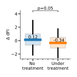
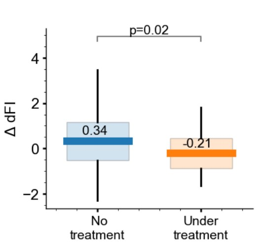

Unsupervised aging#
This report refers to this repository where all used code are compiled.
Introduction#
Wouldn’t you like to know, how long will you live? And if somebody asked you to give an estimate, what would you do? The obvious thing is to rely on chronological age. Surprisingly, it may not be the best or most convenient approach.
Biomarker of aging is a measurable characteristic of a living creature, which predicts longevity and future functional capacity better, then chronological age. Discovering good biomarkers of aging is crucial for testing ways to extend lifespan, since the change in biomarkers would be observable throughout the lifespan of an organism. This in term allows for faster research iterations and brings us closer to the world without aging.
Authors of paper “Identification of a blood test-based biomarker of aging through deep learning of aging trajectories in large phenotypic datasets of mice” [Avchaciov et al., 2022] claim to find a new biomarker — dynamic Frailty Index (dFI), which correlates well with existing ones, and has the benefit of being computed from easily measurable blood parameters. Moreover, this biomarker was found in unsupervised fashion, by analyzing a number of cross-sectional and longitudinal datasets.
The theory behind this indicator is the science of dynamical systems. The idea of the order parameter associated with instability is a generalization of a concept initially introduced to describe phase transitions in thermodynamics. The idea was further developed for applications to open non-equilibrium systems: next to the critical point, the dynamics of stable components of a system is completely determined by the “slow” dynamics of only a few “order-parameters”. The dFI identified as an approximation to the order parameter is a fundamental macroscopic property of the aging organism as a non-equilibrium system.
Results#
Our task is basically to reproduce the results of this paper. It includes training a deep learning model on the mouse phenome database and checking correlations of dFI with known aging biomarkers. The official implementation is available on github. It is written in python and Tensorflow. It took quite some time to configure and launch it, but we managed to do it in the end.
In particular, we came up with a recipe for creating a conda environment, which hopefully will make reproduction easier (the instructions are in ORIG_README.md).
Also the link to the dataset Yuan2_strainmeans.csv was not working. We found it in the internet, but we are not sure, that this is the same version, since results of our run differ a bit from what we saw in the paper.
Regarding experiments: in the paper, dFI was compared to the following markers:
PFI (physiological frailty index),
RDW (red blood cell distribution width),
BW (body weight),
C-reactive protein,
murine chemokine CXCL1,
total luciferase flux.
Overall, they turned out to be strongly associated. Also, authors showed, that dFI reflects lifespan-modulating interventions: a high-fat diet increases the dFI (for male mices), and rapamycin treatment decreases it.
We rerun the notebooks in the repository, which perform all of aforementioned experiments. The results were slightly different numerically, but all of the author’s claims still hold. To avoid populating the repo with tons of pictures, we refrain ourselves to one example (the rest could be obtained by running the corresponding notebook).
Let’s look at the change between two consecutive measurements of dFI in groups with and without rapamycin treatment (rapamycin is a drug, which has been shown to decelerate aging in mice).


Fig. 13 Change between two consecutive measurements of dFI#
In the paper, page 8, figure 7c, authors have another result:


Fig. 14 Original change between two consecutive measurements of dFI#
We can see, that absolute values are different, but their relative position (and therefore conclusion) is the same. The difference might be due to discrepancy in dataset version, or due to stochasticity in neural net training process (on different hardware results might vary). In the end, absolute value of a biomarker is not as important, as it’s behaviour as a whole.
Discussion#
The paradigm of aging#
There are two major paradigms around aging: the first one is seeing aging as a consequence of developmental process, for example, some mutations can provide some advantages early in life, but become pathological later in life. The second paradigm is aging resulting from a stochastic process of damage accumulation. Additionally, there is a view that aging is not and cannot be programmed. Instead, aging is a continuation of developmental growth, driven by genetic pathways such as mTOR. This is often misunderstood as a sort of programmed aging. In contrast, aging is a purposeless quasi-program or, figuratively, a shadow of actual programs.
The authors precisely state that they assume aging is a particular case of the dynamics of a complex system unfolding near a bifurcation or a tipping point on the boundary of a dynamic stability region. Aging results from inherent dynamic instability of the underlying regulatory networks and manifests itself as small deviations of the organism state variables (physiological indices) get exponentially amplified and lead to the exponential acceleration of mortality. At the age approximately corresponding to the average lifespan in the population, non-linear effects take over the dynamics of dFI, and the organism state deviates from its youthful state even faster than exponentially. Such a situation is incompatible with survival and hence cannot be observed in the data. According to the model and the experiment in the paper, death occurs quickly once the maximum dFI level is reached at some point in the life history of the animal.
Therefore, we conclude that the authors follow the stochastic paradigm of aging.
Weak points and improvements#
They use PCA to analyze the data. However, there are more advanced methods like t-SNE or UMAP, which do not assume linearity.
Next, they aimed to build easy-to-compute biomarker, but now they use 12 features. Probably, it is not a problem to collect from one blood test, but it seems logical to try to reduce the amount of used features. Maybe, in doing that we’ll find out, that there is no need for deep autoencoders and a couple of linear layers will do just fine.
Speaking of which, it seems reasonable to tweak the model architecture. Now they only use previous value of dFI to predict the next one for longitudinal data. That corresponds to Markov assumption. However, it might be beneficial to consider the whole sequence, available at current time. This way the model will become more flexible, and hopefully this will transfer into better quality of the index itself.
Also, the authors themselves point out that the nonlinear dynamics of the order parameter are crucial for explaining mortality. The bigger the animal lifespan in units of the mortality rate doubling time, the more we can neglect the non-linearity. However, if we do not neglect it by increasing the rank of the AR model, we might obtain better variants of dFI.
Credits#
Managing project: Mikhail Seleznyov.
The report text: Mikhail Zybin, Mikhail Seleznyov.
Reproducing results: Nikolay Kotoyants, Mikhail Seleznyov.
References#
Konstantin Avchaciov, Marina P Antoch, Ekaterina L Andrianova, Andrei E Tarkhov, Leonid I Menshikov, Olga Burmistrova, Andrei V Gudkov, and Peter O Fedichev. Unsupervised learning of aging principles from longitudinal data. Nature Communications, 13(1):6529, 2022.